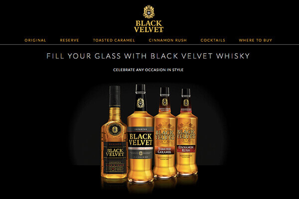

-

Sweater Weather uses the Weather Underground API to give you conditions for how the weather feels and what to wear.
-

San Francisco Movie Map uses the Google Maps API to display where movies were filmed in SF. Search for locations by lead actor, movie, location or year.
-

Black Velvet
A responsive, long format website utilizing parallax scrolling, video, and animation.
-

Freixenet emails
Seasonal content promoting Freixenet's latest offerings.
-

Callie Collection
A responsive, long format website utilizing parallax scrolling, video, and animation.
Black Velvet Responsive Website
Website Design and Development


Black Velvet and Paul Masson's websites needed to be updated to make them responsive and utilize best web practices.
We began by reviewing the current content and brand direction before starting on the site templates. The designs stay true to the brand identity while being modern and user friendly.
I also did the development on this site after the designs were approved. One of the challenges was to create a template that would work for both brands and be easy to update. The responsive designs makes it easy to view across all devices and intutive for future content.